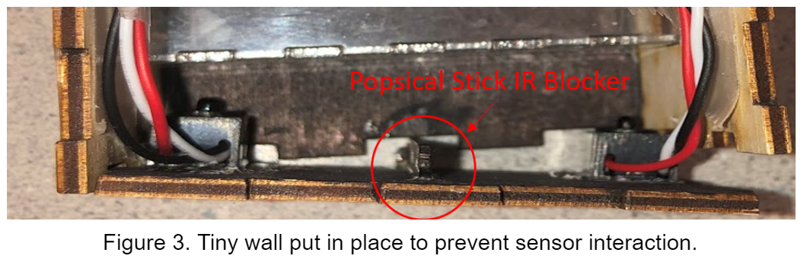

ECE 5725 | Operation BeeCam
Annie Kimmel (mak454), Rajiv Kommareddy (rrk64)
Introduction
Honey bees are the premiere agricultural pollinator bringing in more than $150B annually. They are capable of robust sustained operation in unpredictable environments far beyond what is possible with state-of-the-art robots, and many fields of swarm technological research look to them for design guidance. Today they are threatened by a myriad of causes, some still not fully known. It is crucial, therefore, to gain as much information about them as possible, though this task is hard to accomplish given that their natural environment is very hostile to the usual observational equipment. That’s why we’ve become the Big Brother of the bee world. Our system of tagging and tracking bees as they leave and enter the hive requires very little human intervention after set-up. It also detects pollen and has been designed such that another user can easily adjust threshold values at will.
Objective
We aim to uniquely identify each bee, log its entries and exits from the hive, and determine whether or not it has pollen on it during each entry or exit.
Materials
2 pairs of infrared break-beam sensors ($1.95 each)
2 Pi Camera V2s ($29.95 each)
2 LED light rings ($16.99 each)
2 Raspberry Pi B+s ($34.99 each)
2 PiTFT screens ($34.95 each)
Clear Acrylic ($2.50 per square foot)
Plywood ($3.00 per square foot)
Sharpie ($1.08)
Wires, glue, screws (price given amount used negligible)
Design
The final design for this project evolved through several prototypes, as expected, and ended looking quite different than originally planned. The original design had a single tunnel that held both cameras along with a little hole for the bees to walk across the scale. Two big critiques for this design were a) any tunnel big enough to hold the camera would be big enough to fit multiple bees and b) the scale would not be a very accurate way of measuring honey bees’ weight because they weigh so little and the change in readings due to them walking would heavily affect the measurements. We ended up with a tunnel within a box; the exterior box held the cameras and break beam sensors while the internal tunnel was clear so the bees could be easily photographed (see Figure 1). We decided to make the bigger box out of wood since it is lighter than acrylic.
Hardware
The hardware design here is actually fairly straightforward. The bigger box holding the cameras and IR break-beam sensors was laser cut from 3mm plywood and measures roughly 50mm wide by 60mm tall by 70mm long from the exterior. The interior walls were colored black with sharpie to make image processing easier (note a very simple color detection computer vision life hack: anything irrelevant that can be made black should be made black). The interior clear tunnel was cut from 1.5mm clear acrylic and was 14mm by 14mm tall and wide and 75 mm long. Both the box and the tunnel were fixed to each other using wood glue. A significant challenge here was to get the break-beam sensors to detect each other, but also be sensitive enough to detect a bee blocking the tunnel. Given that these sensors were in such close proximity to each other we originally thought this was nearly impossible. However, through intentional vertical misalignment (vertically the emitter and the detector are roughly a centimeter off from each other), we were able to get it so that any considerable blockage of the tunnel would result in a “break.” Another subtle but crucial detail added in order to get the IR beam detectors working was the addition of a small popsicle stick wall (also colored black, so difficult to see) perpendicular to the main wall to prevent the sensors from detecting each other (see figure 3).

On the circuitry side, this was tough. In the conclusion we will touch on improvements and the most necessary, immediate improvement needed is in wiring and circuit design. Because we had two Pis, two PiTFT screens, and multiple items needing power, ground, plus a GPIO connection to both Pis, the only choice we had given the amount of time we had was to use two breadboards and a lot of extraordinarily lengthy wires. Another challenge was keeping the wires out of the pictures, which required some interesting mechanical gymnastics involving duct tape. This is clearly a less than ideal situation, and in the future it will be remedied.
Software
The software side consisted of 3 main obstacles: organizing and storing data, handling data coming in faster than it could be processed (i.e. multiple bees in rapid succession), and making the system user-friendly for an entomologist. We ended up turning to object-oriented Python (which made data transfer and organization much cleaner) and multithreading to accomplish this. We also chose to use PyGame to create a GUI so that our end users could easily adjust various threshold values on their own without having to dig through code, saving them time as well as preventing the system from being accidentally damaged. The crux of the identification process was the AprilTags library, which allowed us to stick tiny tags on the bees and uniquely identify each one. The crux of the pollen detection process was OpenCV, which was used very simplistically in this project (more on that later). Though the software is by no means perfect at this time, it has come a long way from the original un-debuggable command line interface.
Code Common to Both Cameras and Screens
Both cameras take input from the sensors on the GPIO pins. They also both have a physical quit button and a physical start/stop button, which allows the user to pause the sensor detection. Each controls its own respective camera and light ring, which are both set to “sport” exposure mode with the absolute minimum shutter speed in order to take clear pictures of rapidly moving objects. Both are also set to loop continuously very quickly polling the sensors, because for some reason the interrupts weren’t getting out of “interrupt mode” fast enough to detect continuous passes (Annie fiddled around with this a good deal and it never worked so we returned to polling). When a sensor is tripped, a picture is taken that is named after the current count (number of trips that have occurred since the program started running) as well as which sensor was tripped (indicating whether the bee was entering or exiting the hive). The timestamp of the sensor trip is recorded as well. made it much easier to organize and match up logged data with photos (see code snippet 1).
Both contain virtual, on-screen buttons that allow the user to adjust the shutter speed and the delay in time between sensor tripping and the picture being taken. They both save all the pictures they take, and also write a log of their data to a file when quit is called (see code snippet 2).
BeeCam.py
This code corresponds to the top camera, which detects april tags and assigns the detection data to the bee matching the identified tag. In this code we have a Bee object that contains the bee’s logs of entry and exit times. We then have a list of Bee objects whose index in the list corresponds to its tag number and the time of the triggering is appended appropriately based on the sensor and tag number (see code snippet 3).
The most difficult part of this project was trying to make it so that the code could handle multiple bees in rapid succession. The apriltag processing functions were not exceptionally quick – it could take up to several seconds to fully process an image – especially with small, furry, fast moving objects. There was no way to speed of the tag processing without sacrificing accuracy. Instead, we utilized multithreading to take pictures a lot faster than the apriltag algorithm could run and began processing each picture as a background thread. We had the apriltag algorithms write the outcome of the processing to a text file named according to its corresponding picture (see code snippet 4). In addition to this file, we have a separate program that runs in the background which constantly checks to see if the outcome from the apriltags has been written to said file yet, and then makes its own file with a much simpler output that is easier to parse (it contains one line that is “tag: #” where the number is the tag detected or -1 else) making the in-system delay slower than it would be if it had to open the whole file. We shall refer to this file in the report as the “done” file. But the main reason for this is by having a separate program check for the apriltag outcome file creation, we can run it on a different thread than the main process and background it so that sensor detection is not delayed or inhibited.
Pictures whose done file had not yet been created were put on a queue and the system constantly check for new done files corresponding to pictures that the apriltag algorithm had finished processing. If a new file is detected, it removes file from the queue. The raspberry pi should execute processes in the order in which they are received if they are of equal priority, which these all are, so we assume that the oldest picture taken is most likely to be finished and check if a file exists corresponding to that picture. If it does exist, then we check it for the corresponding tag and append the time according to the tag and the sensor tripped.
For this PiTFT screen, in addition to the controls stated above we also display the most recently processed tag ID number with the most recently processed file on the screen. Of course, it displays the most recent picture taken (which likely will not correspond to the most recently processed file or tag ID) as well as the date of the most recently taken picture, which allows for easier human debugging (see a picture of the default screen below in Figure 4). The real pictures replace the cartoon bee picture in the center.
SideCam.py
This code corresponds to the side camera and its respective light ring. This program is actually much simpler than the top camera because the image analysis we are doing on it runs much faster, eliminating the need for multithreading (although it could potentially be improved by running slower, more advanced algorithms and using multithreading as well). In this case we have two lists, one that is a string of the count concatenated with the boolean of whether it has pollen or not, the other is a timestamp for every time the sensor is tripped.
Another feature of this program is that it begins with a default image and a filtered version of the default image so that the user understands how the filtering works (see code snippet 6).
This shows that anything that does not match the threshold value (pure hex yellow) is set to black, then the remaining pixels are set to white and counted. It provides a visual for the user, which is much easier to understand.
Seen below (code snippet 7, which is very similar to the code above) is the actual color detection code, executed on every picture taken. Simplicity is the key for speed here. It merely takes the image as an integer array representing the pixel colors and calculates whether each pixel is within a range of a certain color, the color of the pollen. If the number of pixels within the range of a certain color is greater than a certain threshold, then there must have been pollen in the picture. We save the result of the “masked” image, which has black pixels out of range and white pixels in range, and display it to the screen. We also append that result (either it was above the threshold or it wasn’t) to the list.
Additionally, the end user needs to be able to adjust both the values for the desired color range and the absolute threshold value for the number of pixels, so we added numerous buttons to the screen to achieve this. Very few variables were hardcoded, nearly everything is adjustable from the screen view. The final default screen image is shown below (Figure 5).
Testing
Much if not all of our initial testing was conducted using a dead bee glued to a stick with an apriltag glued on top of it (see figure 6 below).
We also did a round of testing with live bees, which taught us to always use protective eyewear when being around bees and also that we needed to vastly decrease both our shutter time and our delay time (see figure 7 below).

Even after we have demoed our project, it will get the real test in the field this summer. As with all bio-tech experiments, only over a long period of time we can truly see how accurate our design was and what needs to change.
Results
The box design, after its several iterations, was nearly perfected by the end, with the acrylic tunnel, beam sensors, ring lights, and cameras all aligned such that we had a fully integrated and enclosed device. This made debugging software later much easier, as we were able to reasonably assume that no errors were stemming from a misalignment or loose connection in the box hardware, (i.e. if you place something in the tunnel, it will certainly trip a beam and the camera will be able to take an illuminated picture at an appropriate position along the tunnel.) The images taken upon a bee detection caused by a break in the IR beam can be seen below in figures 8 and 9, embedded in their respective GUI interfaces.
In the end, we were able to develop a system which was able to detect a bee entering or exiting a hive through the tunnel, and take a photo of it from the two angles. The problems that arose by the time of our demonstration were that the system of tripping the wire and taking the pictures felt as though it were lagging. Upon booting up the systems and running the programs for the first time, the first images of a bee entering the tunnel were triggered fine and quality pictures were taken. However, for the next few seconds afterwards, the sensors did not seem to detect any break in the beams and therefore did not trigger the lights or cameras to turn on. By the time of the demo, we concluded that this was caused by the background processing of the Apriltag detection for the photos still in the queue.
Despite whether or not the tag from the top view picture was detected, we were able to observe that the appropriate files were updated properly. The test bee we used had the Apriltag with ID 33, and we were able to see that 1_s1.txt (assuming the test bee entered the side designated “enter”) would update with the output of the apriltag_demo bash script, as seen in figure 10, and the associated done_1_s1.txt would read out the Tag ID detected. Most of the times we ran the program, we would see “Tag: -1” indicating that there was no valid Apriltag detected, as seen in figure 11. During the times we were able to get a tag detection, we would see that it would read “Tag: 33”. Also in the cases of a proper detection, we would see that the BeeData.txt file appropriately updated, where an array would be printed to the line for the Bee 33 entries, showing the times that the bees were detected in milliseconds after a predetermined date, separated by commas. Otherwise, the array will be left empty, as seen in figure 12. The screenshots from figures 10-12 are reflective of a lack of detection, because the files are overwritten each time the program is run, and the most recent run of the program did not provide a detection.
With some improvements to software efficiency and parallelization for better tag detection, we would be able to consistently record detections without the processor cores being bogged down by image processing in the background.
Demo
Conclusion
We succeeded in accomplishing the stated objectives of our project (as shown in the results section above). While at the very end the monitor was unable to detect the tags by parsing the images in real-time, a significant portion of the project worked flawlessly and gives hope for a future, more robust version of the device.
The demo went as smoothly as it could have, and it put on display everything that we accomplished well. We were able to demonstrate the integrated box design and push a sample bee through the tunnel, and show the pictures taken of the bee from both angles. The GUIs worked as expected with their on-screen TFT buttons to adjust various parameters, and we were able to show that the pollen detection mechanism from the side camera to theoretically work, although we will only know when we have bees with real pollen sacs going through our tunnel. The only unsatisfying portion of our demonstration was the missed detection of the Apriltag.
However, there is still much left to be improved upon. Both the software and the hardware were sufficient but nowhere close to optimal. Additionally, while we were limited by budgeting and time to a certain degree, in the future once the design is down for certain many things could probably be ordered cheaper than they are right now in “prototype” form.
First and foremost, the hardware. The wiring and the breadboard could all preferably be converted to a printed circuit board or at least neatly soldered wires in a perf board. The PiTFT screens could be significant bigger to improve user experience, especially on the side camera display as it is fairly critical that the user is able to see what changing the filtering values will do to the image. Also, some form of exterior casing that includes all the Pis, the PiTFT screens, and the circuitry will need to be added for protection against outdoor elements where this will be deployed. We also need to add some form of user voltage control for the lighting as it can be too bright or too dim at times. And perhaps most importantly, we need more tags. There’s a lot more than 50 bees in a hive, and we want to tag them all. But more on that in the software side.
The software side is a little more complex. With regards to tagging, we want a way to increase the number of tags without significantly increasing the amount of processing time it takes to determine what tag it is. One way to do this is to use the original 50 april tags, but add a colored trim around it that differentiates it in another unique way. 7 different colors multiplied by 50 tags is 350 tags, which is more toward the order of magnitude we are looking at tagging. Another easy fix would be to add a list of detections where the sensor is tripped, but no tag is detected. This would be very useful for debugging so that we would know how many bees were missing and when, or if we are missing a certain tag number, or tags at a certain time of day, or an issue like that. Additionally, both cameras it would incredibly useful if we could tell if more than one bee was in the image. This would require more analysis and more time, but given that we are not analyzing in real time anyways this would not be a significant drawback. The side camera could also use more advanced but slower algorithms with multithreading/backgrounding to better get an idea of how much pollen is on a bee.
Overall, this project was a success in that the goal was to get a working, functional prototype of something rarely, if ever, done before – tracking and logging data of unique individual bees. It is a beginning structure, not an end product. However, by the end of this summer, it will be much closer to the optimal end product and likely will be taken even further in research next semester in Professor Petersen’s research lab. We will be making more, better versions of these, likely with some added weighing tool, in the coming semester. We hope this tool will help us bette
Code Appendix
Used with the apriltag library and the OpenCV2 library
BeeCam.py
import RPi.GPIO as GPIO
import time as t
import os
import subprocess
import sys
import pygame
import datetime
import cv2
import numpy as np
from pygame.locals import *
#piTFT environment variables
#os.putenv('SDL_VIDEODRIVER', 'fbcon')
#os.putenv('SDL_FBDEV', '/dev/fb1')
#os.putenv('SDL_MOUSEDRV', 'TSLIB')
#os.putenv('SDL_MOUSEDEV', '/dev/input/touchscreen')
class Bee(object) :
def __init__(self):
entries = []
exits = []
size = width, height = 320, 240
pygame.init()
pygame.mouse.set_visible(False)
screen = pygame.display.set_mode(size)
font = pygame.font.Font(pygame.font.get_default_font(), 12)
white = 255, 255, 255
black = 0, 0, 0
color = 127, 15, 111
GPIO.setmode(GPIO.BCM)
GPIO.setup(19, GPIO.OUT) #ring light 1
GPIO.setup(13, GPIO.OUT) #ring light 2
GPIO.setup(27, GPIO.IN, pull_up_down=GPIO.PUD_UP) #bailout button
GPIO.setup(17, GPIO.IN, pull_up_down=GPIO.PUD_UP) #pause/start button
GPIO.setup(5, GPIO.IN, pull_up_down=GPIO.PUD_UP) #beam sensor 1
GPIO.setup(26, GPIO.IN, pull_up_down=GPIO.PUD_UP) #beam sensor 2
#instantiate variables
sensor1 = False #exiting sensor
sensor2 = False #entering sensor
current_time = 0.0
hasPollen = False
cnt = 0
num_name = ""
delay = 500 #minimum 100, maximum 6000, steps of 25
ss = 100 #100 is minimum already, maximum 1000, steps of 25
tag = -1
global paused
paused = False
ss_up_button = pygame.draw.rect(screen, white, [20, 200, 50, 30])
ss_down_button = pygame.draw.rect(screen, white, [90, 200, 50, 30])
delay_up_button = pygame.draw.rect(screen, white, [180, 200, 50, 30])
delay_down_button = pygame.draw.rect(screen, white, [250, 200, 50, 30])
top = "default.png"
bees = []
pics_taken = []
for x in range(50) :
bee = Bee()
bee.entries = []
bee.exits = []
bees.append(bee)
def GPIO27_callback(channel):
while len(pics_taken) != 0 :
pic = pics_taken[0]
print(os.path.exists("done_" + pic + ".txt"))
if os.path.exists("done_" + pic + ".txt") :
pics_taken.pop(0)
f = open("done_" + pic + ".txt")
line = f.readline()
f.close()
if not "-1" in line :
tag = int(line[4:])
if "s1" in pic :
bees[tag].entries.append(str(t.time()))
else:
bees[tag].exits.append(str(t.time()))
file = open("BeeData.txt", "w+")
file.write("Bee Data: \n")
for x in range(50):
file.write("Bee %d:\n" %x)
bee = bees[x]
file.write("Entries: " + str(bee.entries) + "\n")
file.write("Exits: " + str(bee.exits) + "\n")
file.write("\n")
file.close()
GPIO.output(19, GPIO.LOW)
GPIO.output(13, GPIO.LOW)
GPIO.cleanup()
quit()
def GPIO17_callback(channel):
paused = not paused
GPIO.add_event_detect(27, GPIO.FALLING, callback=GPIO27_callback, bouncetime=300)
GPIO.add_event_detect(17, GPIO.FALLING, callback=GPIO17_callback, bouncetime=300)
while(True):
if (not paused):
sensor1 = not GPIO.input(5)
sensor2 = not GPIO.input(26)
if (sensor1 or sensor2):
GPIO.output(19, GPIO.HIGH)
GPIO.output(13, GPIO.HIGH)
current_time = t.gmtime(t.time())
cnt = cnt + 1
if(sensor1):
num_name = str(cnt) + "_s1"
else:
num_name = str(cnt) + "_s2"
print("num_name = " + num_name)
os.system("sudo raspistill -t " + str(delay) + " -ex sports -ss " + str(ss) + " -o top" + num_name + ".jpg")
pics_taken.append(num_name)
os.system("./apriltag_demo -f tag36h11 top" + num_name + ".jpg > " + num_name + ".txt & ")
os.system("./file_analyze " + num_name + "& ")
top = "top" + num_name + ".jpg"
t.sleep(.2)
else:
GPIO.output(19, GPIO.LOW)
GPIO.output(13, GPIO.LOW)
if len(pics_taken) != 0 :
pic = pics_taken[0]
print(os.path.exists("done_" + pic + ".txt"))
if os.path.exists("done_" + pic + ".txt") :
pics_taken.pop(0)
f = open("done_" + pic + ".txt")
line = f.readline()
f.close()
if not "-1" in line :
tag = int(line[4:])
print(str(tag))
if "s1" in pic :
bees[tag].entries.append(str(t.time()))
else:
bees[tag].exits.append(str(t.time()))
pygame.draw.rect(screen, black, [0, 0, 320, 200])
image1 = pygame.image.load(top)
image1 = pygame.transform.scale(image1, (160, 160))
image1_rect = image1.get_rect()
image1_rect = image1_rect.move(80, 10)
ss_up_button = pygame.draw.rect(screen, white, [20, 200, 50, 30])
ss_down_button = pygame.draw.rect(screen, white, [90, 200, 50, 30])
delay_up_button = pygame.draw.rect(screen, white, [180, 200, 50, 30])
delay_down_button = pygame.draw.rect(screen, white, [250, 200, 50, 30])
ss_up_b = font.render("SS+", True, black)
ss_up_b_rect = ss_up_b.get_rect()
ss_up_b_rect.center = ss_up_button.center
ss_down_b = font.render("SS-", True, black)
ss_down_b_rect = ss_down_b.get_rect()
ss_down_b_rect.center = ss_down_button.center
delay_up_b = font.render("DELAY+", True, black)
delay_up_b_rect = delay_up_b.get_rect()
delay_up_b_rect.center = delay_up_button.center
delay_down_b = font.render("DELAY-", True, black)
delay_down_b_rect = delay_down_b.get_rect()
delay_down_b_rect.center = delay_down_button.center
shs = font.render("Shutter Speed: " + str(ss) + " us", True, white)
shs_r = shs.get_rect()
shs_r.left = 18
shs_r.top = 180
dl = font.render("Delay: " + str(delay) + " ms", True, white)
dl_r = dl.get_rect()
dl_r.left = 180
dl_r.top = 180
file_name = font.render(num_name + ".txt", True, white)
file_r = file_name.get_rect()
file_r.left = 5
file_r.top = 45
tagid = font.render("Tag ID# :", True, white)
tagid_r = tagid.get_rect()
tagid_r.left = 5
tagid_r.top = 10
idNum = font.render(str(tag), True, white)
idNum_r = idNum.get_rect()
idNum_r.left = 5
idNum_r.top = 25
date = font.render("Date:", True, white)
date_r = date.get_rect()
date_r.left = 255
date_r.top = 10
time = font.render(str(current_time), True, white)
time_r = time.get_rect()
time_r.left = 255
time_r.top = 25
for event in pygame.event.get():
if(event.type is MOUSEBUTTONDOWN):
mouse_pos = pygame.mouse.get_pos()
if(ss_up_button.collidepoint(mouse_pos)):
ss = min(ss + 25, 1000)
if(ss_down_button.collidepoint(mouse_pos)):
ss = max(ss - 25, 100)
if(delay_up_button.collidepoint(mouse_pos)):
delay = min(delay + 25, 6000)
if(delay_down_button.collidepoint(mouse_pos)):
delay = max(delay - 25, 100)
screen.blit(file_name, file_r)
screen.blit(shs, shs_r)
screen.blit(dl, dl_r)
screen.blit(time, time_r)
screen.blit(tagid, tagid_r)
screen.blit(idNum, idNum_r)
screen.blit(date, date_r)
screen.blit(ss_up_b, ss_up_b_rect)
screen.blit(ss_down_b, ss_down_b_rect)
screen.blit(delay_up_b, delay_up_b_rect)
screen.blit(delay_down_b, delay_down_b_rect)
screen.blit(image1, image1_rect)
pygame.display.flip()
SideCam.py
import RPi.GPIO as GPIO
import time as t
import os
import subprocess
import sys
import pygame
import datetime
import cv2
import numpy as np
from pygame.locals import *
#piTFT environment variables
#os.putenv('SDL_VIDEODRIVER', 'fbcon')
#os.putenv('SDL_FBDEV', '/dev/fb1')
#os.putenv('SDL_MOUSEDRV', 'TSLIB')
#os.putenv('SDL_MOUSEDEV', '/dev/input/touchscreen')
pollen = []
times = []
size = width, height = 320, 240
pygame.init()
pygame.mouse.set_visible(False)
screen = pygame.display.set_mode(size)
font = pygame.font.Font(pygame.font.get_default_font(), 12)
white = 255, 255, 255
black = 0, 0, 0
red = 255, 0, 0
green = 0, 255, 0
blue = 0, 0, 255
yellow = 255, 255, 0
GPIO.setmode(GPIO.BCM)
GPIO.setup(19, GPIO.OUT) #ring light 1
GPIO.setup(13, GPIO.OUT) #ring light 2
GPIO.setup(27, GPIO.IN, pull_up_down=GPIO.PUD_UP) #bailout button
GPIO.setup(5, GPIO.IN, pull_up_down=GPIO.PUD_UP) #beam sensor 1
GPIO.setup(26, GPIO.IN, pull_up_down=GPIO.PUD_UP) #beam sensor 2
#instantiate variables
sensor1 = False #exiting sensor
sensor2 = False #entering sensor
current_time = ""
hasPollen = False
cnt = 0
dl = 500 #minimum 100, maximum 6000, steps of 25
ss = 100 #100 is minimum already, maximum 1000, steps of 25
r_thr = 255
g_thr = 240
b_thr = 0
side = "default.png"
num_name = ""
yellow_pix = 0
threshold = 1000
#test
img = cv2.imread("default.png", 1)
hsv = cv2.cvtColor(img, cv2.COLOR_BGR2HSV)
color = np.uint8([[[b_thr, g_thr, r_thr]]])
hsv_color = cv2.cvtColor(color, cv2.COLOR_BGR2HSV)
hue = hsv_color[0][0][0]
lower_bound = np.array([hue-10, 100, 100], dtype = np.uint8)
upper_bound = np.array([hue+10, 255, 255], dtype = np.uint8)
mask = cv2.inRange(hsv, lower_bound, upper_bound)
cv2.imwrite("default_side.jpg", mask)
side_mask = "default_side.jpg"
yellow_pix = cv2.countNonZero(mask)
if(yellow_pix > threshold) :
hasPollen = True
else :
hasPollen = False
#end test
paused = False
def GPIO27_callback(channel):
GPIO.output(19, GPIO.LOW)
GPIO.output(13, GPIO.LOW)
GPIO.cleanup()
file = open("PollenData.txt", "w+")
file.write("Pollen Data:\n")
file.write("Pollen: " + str(pollen) + "\n")
file.write("Time Stamps: " + str(times) + "\n")
file.close()
quit()
GPIO.add_event_detect(27, GPIO.FALLING, callback=GPIO27_callback, bouncetime=300)
while True:
if not paused :
sensor1 = not GPIO.input(5)
sensor2 = not GPIO.input(26)
if (sensor1 or sensor2):
GPIO.output(19, GPIO.HIGH)
GPIO.output(13, GPIO.HIGH)
current_time = t.gmtime(t.time())
times.append(current_time)
cnt = cnt + 1
if(sensor1):
num_name = str(cnt) + "_s1"
else:
num_name = str(cnt) + "_s2"
os.system("sudo raspistill -t " + str(dl) + " -ex sports -ss " + str(ss) + " -hf -vf -o side" + num_name + ".jpg")
side = "side" + num_name + ".jpg"
img = cv2.imread("side" + num_name + ".jpg", 1)
hsv = cv2.cvtColor(img, cv2.COLOR_BGR2HSV)
color = np.uint8([[[b_thr, g_thr, r_thr]]])
hsv_color = cv2.cvtColor(color, cv2.COLOR_BGR2HSV)
hue = hsv_color[0][0][0]
lower_bound = np.array([hue-10, 100, 100], dtype = np.uint8)
upper_bound = np.array([hue+10, 255, 255], dtype = np.uint8)
mask = cv2.inRange(hsv, lower_bound, upper_bound)
cv2.imwrite("smask.jpg", mask)
side_mask = "smask.jpg"
yellow_pix = cv2.countNonZero(mask)
if(yellow_pix > threshold) :
hasPollen = True
else :
hasPollen = False
pollen.append(num_name + ": " + str(hasPollen))
t.sleep(.2)
else:
GPIO.output(19, GPIO.LOW)
GPIO.output(13, GPIO.LOW)
pygame.draw.rect(screen, black, [0, 0, 320, 240])
pygame.draw.rect(screen, white, [1, 20, 152, 122])
image1 = pygame.image.load(side_mask)
image2 = pygame.image.load(side)
image1 = pygame.transform.scale(image1, (150, 120))
image2 = pygame.transform.scale(image2, (70, 70))
image1_rect = image1.get_rect()
image2_rect = image2.get_rect()
image1_rect = image1_rect.move(2, 21)
image2_rect = image2_rect.move(160, 20)
red_up_button = pygame.draw.rect(screen, red, [20, 180, 30, 20])
red_down_button = pygame.draw.rect(screen, red, [20, 210, 30, 20])
green_up_button = pygame.draw.rect(screen, green, [60, 180, 30, 20])
green_down_button = pygame.draw.rect(screen, green, [60, 210,30, 20])
blue_up_button = pygame.draw.rect(screen, blue, [100, 180, 30, 20])
blue_down_button = pygame.draw.rect(screen, blue, [100, 210, 30, 20])
ss_up = pygame.draw.rect(screen, white, [160, 125, 30, 20])
ss_down = pygame.draw.rect(screen, white, [210, 125, 30, 20])
dl_up = pygame.draw.rect(screen, white, [160, 167, 30, 20])
dl_down = pygame.draw.rect(screen, white, [210, 167,30, 20])
pixel_up = pygame.draw.rect(screen, white, [160, 210, 35, 20])
pixel_down = pygame.draw.rect(screen, white, [210, 210, 35, 20])
ss_up_b = font.render("SS+", True, black)
ss_down_b = font.render("SS-", True, black)
ss_up_r = ss_up_b.get_rect()
ss_up_r.center = ss_up.center
ss_down_r = ss_down_b.get_rect()
ss_down_r.center = ss_down.center
dl_up_b = font.render("DL+", True, black)
dl_down_b = font.render("DL-", True, black)
dl_up_r = dl_up_b.get_rect()
dl_up_r.center = dl_up.center
dl_down_r = dl_down_b.get_rect()
dl_down_r.center = dl_down.center
run_b = pygame.draw.rect(screen, yellow, [235, 50, 72, 20])
run = font.render("Run Again", True, black)
run_r = run.get_rect()
run_r.center = run_b.center
red_up_b = font.render("+", True, black)
red_up_b_rect = red_up_b.get_rect()
red_up_b_rect.center = red_up_button.center
red_down_b = font.render("-", True, black)
red_down_b_rect = red_down_b.get_rect()
red_down_b_rect.center = red_down_button.center
green_up_b = font.render("+", True, black)
green_up_b_rect = green_up_b.get_rect()
green_up_b_rect.center = green_up_button.center
green_down_b = font.render("-", True, black)
green_down_b_rect = green_down_b.get_rect()
green_down_b_rect.center = green_down_button.center
blue_up_b = font.render("+", True, black)
blue_up_b_rect = blue_up_b.get_rect()
blue_up_b_rect.center = blue_up_button.center
blue_down_b = font.render("-", True, black)
blue_down_b_rect = blue_down_b.get_rect()
blue_down_b_rect.center = blue_down_button.center
pixel_up_b = font.render("Pix+", True, black)
pixel_up_b_rect = pixel_up_b.get_rect()
pixel_up_b_rect.center = pixel_up.center
pixel_down_b = font.render("Pix-", True, black)
pixel_down_b_rect = pixel_down_b.get_rect()
pixel_down_b_rect.center = pixel_down.center
thr_vals = font.render("Threshold Values:", True, white)
thr_vals_r = thr_vals.get_rect()
thr_vals_r.left = 15
thr_vals_r.top = 145
vals = font.render("R=" + str(r_thr) + " G=" + str(g_thr) + " B=" + str(b_thr), True, white)
vals_r = vals.get_rect()
vals_r.left = 15
vals_r.top = 160
m_thr = font.render("Pixel # Threshold: " + str(threshold), True, white)
m_thr_r = thr_vals.get_rect()
m_thr_r.left = 160
m_thr_r.top = 194
shuttersp = font.render("Shutter Speed: " + str(ss) + " us", True, white)
shutter_r = shuttersp.get_rect()
shutter_r.left = 160
shutter_r.top = 110
delay = font.render("Delay Time: " + str(dl) + " ms", True, white)
delay_r = delay.get_rect()
delay_r.left = 160
delay_r.top = 151
pol_pix = font.render("Pollen Pixel #: " + str(yellow_pix), True, white)
pol_pix_r = pol_pix.get_rect()
pol_pix_r.left = 160
pol_pix_r.top = 95
pollen_id = font.render("Pollen? " + str(hasPollen), True, white)
pollen_id_r = pollen_id.get_rect()
pollen_id_r.left = 235
pollen_id_r.top = 20
filter_b = font.render("Filtered: ", True, white)
filter_r = filter_b.get_rect()
filter_r.left = 1
filter_r.top = 3
og = font.render("Original: ", True, white)
og_r = og.get_rect()
og_r.left = 160
og_r.top = 3
for event in pygame.event.get():
if(event.type is MOUSEBUTTONDOWN):
mouse_pos = pygame.mouse.get_pos()
if(red_up_button.collidepoint(mouse_pos)):
r_thr = min(r_thr+2, 255)
if(red_down_button.collidepoint(mouse_pos)):
r_thr = max(r_thr-2, 0)
if(green_up_button.collidepoint(mouse_pos)):
g_thr = min(g_thr+2, 255)
if(green_down_button.collidepoint(mouse_pos)):
g_thr = max(g_thr-2, 0)
if(blue_up_button.collidepoint(mouse_pos)):
b_thr = min(b_thr+2, 255)
if(blue_down_button.collidepoint(mouse_pos)):
b_thr = max(b_thr-2, 0)
if(run_b.collidepoint(mouse_pos)):
img = cv2.imread("side" + num_name + ".jpg", 1)
hsv = cv2.cvtColor(img, cv2.COLOR_BGR2HSV)
color = np.uint8([[[b_thr, g_thr, r_thr]]])
hsv_color = cv2.cvtColor(color, cv2.COLOR_BGR2HSV)
hue = hsv_color[0][0][0]
lower_bound = np.array([hue-10, 100, 100], dtype = np.uint8)
upper_bound = np.array([hue+10, 255, 255], dtype = np.uint8)
mask = cv2.inRange(hsv, lower_bound, upper_bound)
cv2.imwrite("smask.jpg", mask)
side_mask = "smask.jpg"
yellow_pix = cv2.countNonZero(mask)
if(yellow_pix > threshold) :
hasPollen = True
else :
hasPollen = False
if(ss_up.collidepoint(mouse_pos)):
ss = min(ss + 20, 1000)
if(ss_down.collidepoint(mouse_pos)):
ss = max(ss - 20, 100)
if(dl_up.collidepoint(mouse_pos)):
dl = min(dl + 20, 3000)
if(dl_down.collidepoint(mouse_pos)):
dl = max(dl - 20, 50)
if(pixel_up.collidepoint(mouse_pos)):
threshold = min(threshold+25, 100000)
if(pixel_down.collidepoint(mouse_pos)):
threshold = max(threshold-25, 300)
screen.blit(dl_up_b, dl_up_r)
screen.blit(m_thr, m_thr_r)
screen.blit(dl_down_b, dl_down_r)
screen.blit(ss_up_b, ss_up_r)
screen.blit(ss_down_b, ss_down_r)
screen.blit(pol_pix, pol_pix_r)
screen.blit(pollen_id, pollen_id_r)
screen.blit(thr_vals, thr_vals_r)
screen.blit(pixel_up_b, pixel_up_b_rect)
screen.blit(pixel_down_b, pixel_down_b_rect)
screen.blit(vals, vals_r)
screen.blit(run, run_r)
screen.blit(delay, delay_r)
screen.blit(shuttersp, shutter_r)
screen.blit(filter_b, filter_r)
screen.blit(og, og_r)
screen.blit(red_up_b, red_up_b_rect)
screen.blit(red_down_b, red_down_b_rect)
screen.blit(blue_up_b, blue_up_b_rect)
screen.blit(blue_down_b, blue_down_b_rect)
screen.blit(green_up_b, green_up_b_rect)
screen.blit(green_down_b, green_down_b_rect)
screen.blit(image1, image1_rect)
screen.blit(image2, image2_rect)
pygame.display.flip()
file_analyze.py
import os
import sys
import time
num_name = sys.argv[1]
print(num_name)
while not (os.path.exists(num_name + ".txt")) or (os.stat(num_name + ".txt").st_size < 1000) :
time.sleep(1)
f = open(num_name + ".txt", 'r')
f.readline()
line = f.readline()
print(line)
f.close()
entry = False
exit = False
tag = -1
if "detection" in line :
indx = line.index('-')
if (line[indx+2]).isdigit() :
tag = int(line[indx+1:indx+3])
else :
tag = int(line[indx+1])
file = open("done_" + num_name + ".txt", "w+")
file.write("TAG: " + str(tag) + "\n")
file.close()
file_analyze bash script:
#!/bin/bash sudo python file_analyze.py $1 &
Contact
Annie Kimmel (mak454@cornell.edu), Rajiv Kommareddy (rrk64@cornell.edu)